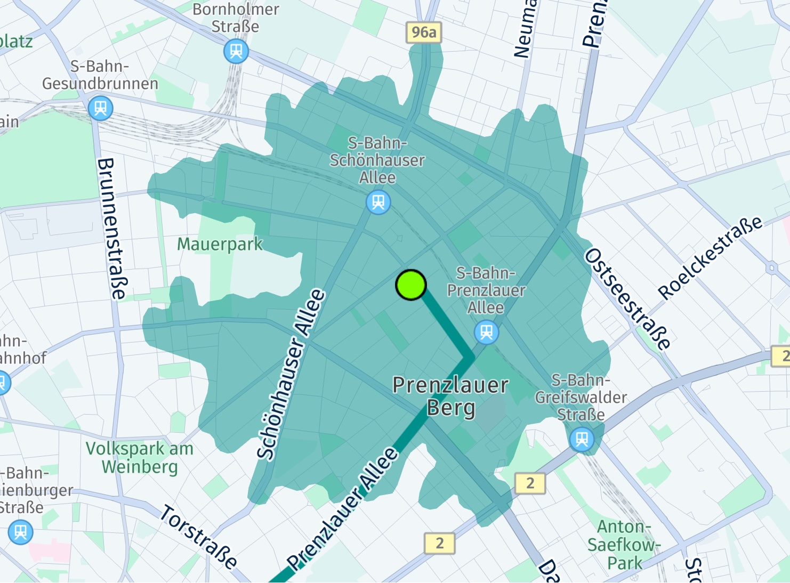

Advanced routing features
Features such as isoline routing and real-time traffic information, which can be refreshed for already calculated routes, play a pivotal role in route planning. This section also delves into features such as returning to a route that has been left during navigation and importing routes from other services.
Isoline routing
With isoline routing you can generate polygons to represent the area of reach from a given point based on time, distance or energy consumption: the polygon will encompass all destinations that can be reached in a specific amount of time, a maximum travel distance, or even the charge level available at an electric vehicle.
The HERE SDK provides IsolineRoutingEngine which can be used to calculate a reachable area from a center point.
try{
_isolineRoutingEngine = IsolineRoutingEngine();
} on InstantiationException {
throw ("Initialization of IsolineRoutingEngine failed.");
}
Note
Isoline routing considers real-time and historical traffic in its calculations.
Some examples of how this could be useful:
- Users can find restaurants within a 2 km walking distance from their current location.
- Users can search for hotels based on the distance to sights, for example, to find hotels within a 20 minute drive to major attractions - such as Disney World and Universal Studios in Orlando, Florida USA.
Below we show a consumption based Isoline example for an electric vehicle scenario, where the driver wants to know which points are reachable within the provided limit of 400 Wh: so, the goal is to consume 400 Wh or less - and the question is: what can the driver reach within this energy limit?
Note
Electric vehicles have a limited reachable range based on their current battery charge and factors affecting the rate of energy consumed, such as road slope or auxiliary power usage. Therefore, it is useful to visualize the appropriate range to avoid running out of energy before reaching a charging point. Since vehicles have unique consumption parameters, they are to be specified in the request for an accurate range to be calculated. For more details, see the electric vehicle section below.
The result will be a GeoPolygon shape that you can show on the map to provide the driver a visual orientation:
// This finds the area that an electric vehicle can reach by consuming 400 Wh or less,
// while trying to take the fastest possible route into any possible straight direction from start.
// Note: We have specified evCarOptions.routeOptions.optimizationMode = OptimizationMode.FASTEST for EV car options above.
List<int> rangeValues = [400];
// With null we choose the default option for the resulting polygon shape.
int? maxPoints;
IsolineOptionsCalculation calculationOptions = IsolineOptionsCalculation.withNoDefaults(
IsolineRangeType.consumptionInWattHours, rangeValues, IsolineCalculationMode.balanced, maxPoints, RoutePlaceDirection.departure);
IsolineOptions isolineOptions = IsolineOptions.withEVCarOptions(calculationOptions, _getEVCarOptions());
_isolineRoutingEngine.calculateIsoline(Waypoint(_startGeoCoordinates!), isolineOptions,
(RoutingError? routingError, List<Isoline>? list) {
if (routingError != null) {
_showDialog("Error while calculating reachable area:", routingError.toString());
return;
}
// When routingError is nil, the isolines list is guaranteed to contain at least one isoline.
// The number of isolines matches the number of requested range values. Here we have used one range value,
// so only one isoline object is expected.
Isoline isoline = list!.first;
// If there is more than one polygon, the other polygons indicate separate areas, for example, islands, that
// can only be reached by a ferry.
for (GeoPolygon geoPolygon in isoline.polygons) {
// Show polygon on map.
Color fillColor = Color.fromARGB(128, 0, 143, 138);
MapPolygon mapPolygon = MapPolygon(geoPolygon, fillColor);
_hereMapController.mapScene.addMapPolygon(mapPolygon);
_mapPolygons.add(mapPolygon);
}
});
This finds the area that an electric vehicle can reach by consuming 400 Wh or less, while trying to take the fastest possible route into any possible straight direction from start.
Why fastest? This depends on the route's optimization mode (we have shown in earlier sections above) - of course, you can specify any mode. Note that each isoline needs exactly one center point from where a journey may start.
Since we are interested in the energy consumption, we also provided EVCarOptions. These options must include battery specifications as shown in the electric vehicle routing section below. If you provide a time or distance limit instead as range type, you can provide the usual route options as shown earlier.
The IsolineRangeType defines the type of the provide range value. Here we use 400. You can provide multiple values - and as a result you would then get multiple Isoline objects - one for each provided range value.
On the other hand, each Isoline object can contain multiple polygons for special cases, such as when the area of reach includes an island. Such areas are provided as separate polygons.
The shape of the resulting polygon can be defined by the maxPoints parameter. It determines the number of vertices of the GeoPolygon. Note that this parameter does not influence the actual calculation of the polygon, but just its appearance.

The screenshot shows the center location of the polygon, indicated by a big green circle. It also shows a possible route beyond this area with two additional found charging stations along the route. In the next section you can find how to calculate routes for electric vehicles.
Note
You can find the above code snippet as part of the "ev_routing_app" example on GitHub.
Refresh routes
The traffic flow information contained in a Route object is valid for the time when the route was calculated, see above. If you want to update this information at any later point in time, you can refresh the route.
It is also possible to refresh the route options for a route:
RefreshRouteOptions refreshRouteOptions = RefreshRouteOptions.withTaxiOptions(taxiOptions);
// Update the route options and set a new start point on the route.
// The new starting point must be on or very close to the original route, preferrably, use a map-matched waypoint if possible.
// Note: A routeHandle is only available, when RouteOptions.enableRouteHandle was set to true when the original route was calculated.
routingEngine.refreshRoute(route.routeHandle, mapMatchedWaypoint, refreshRouteOptions, (routingError, routes) {
if (routingError == null) {
HERE.Route newRoute = routes.first;
// ...
} else {
// Handle error.
}
});
For this you need to know the RouteHandle, which must be requested via RouteOptions.enableRouteHandle before the route was calculated.
In addition, refreshing a route can be useful to convert the route options from one transport type to another or to update specific options. If the conversion is not possible - for example, when a pedestrian route is converted to a truck route, then a routingError indicates this.
You can also shorten the route, by specifying a new starting point. The new starting point must be very close to the original route as no new route is calculated. If the new starting point is too far away, then a routingError occurs.
Note that refreshing a route is not enough when a driver deviates from a route during an ongoing turn-by-turn navigation - as the detour part needs a new route calculation. In such a case, it may be more useful to recalculate the whole route by setting a new starting point - or to use the returnToRoute() method that allows to keep the originally chosen route alternative.
Return to a route
The RoutingEngine allows to refresh an existing route (see above) based on the current traffic situation. The result may be a new route that is faster than the previous one. However, the new startingPoint must be very close to the original route.
If you need to handle a case where the startingPoint is farther away from the route, consider to use the returnToRoute() feature of the RoutingEngine. For example, a driver may decide to take a detour due to the local traffic situation. Calling returnToRoute() will also result in a new route, but it will try to resemble as much as possible from the original route without a costly route recalculation - if possible.
- Stopover waypoints are guaranteed to be passed by.
- Pass-through waypoints are only meant to shape the route, so there is no guarantee that the new route will honor or discard them.
- The current traffic situation is taken into account and may reshape the route.
Note that turn-by-turn navigation is only available for the Navigate Edition.
Import routes
Note
This is a beta release of this feature, so there could be a few bugs and unexpected behaviors. Related APIs may change for new releases without a deprecation process.
You can import routes from other APIs and/or vendors via one of the various overloaded routingEngine.importRoute() methods. Note that this is not a 1:1 import feature, but rather a reconstruction.
A new Route object can be created from:
- Option 1: A list of
GeoCoordinatesandRouteOptions. This can be useful, when the route should be imported from a different vendor or when the route should be persisted for a longer time. The route shape will be kept as close as possible to the one provided. Requires an online connection. - Option 2: A
RouteHandle. This can be useful to import a route from other HERE services. A possible use case can be to create a route on the HERE WeGo website or another web page that uses the HERE REST APIs and then transfer it to a mobile device to start a trip. Note that a map update on backend side or other changes in the real world can lead to an invalid handle. Therefore, it is recommended to use the handle only for a few hours. Although theRouteHandleencodes certain information, it requires an online connection to get the full route data from backend.
Any AvoidanceOptions that are applied may be discarded and reported as violations via the route's Section.sectionNotices. For example, if you request to avoid highways, but the provided coordinates match to a highway road, then the resulting route will still match the highway, but a notice is added to indicate that the desired avoidance option is violated.
In general, be aware that importing a route may not always reproduce exactly the same route as the original one - even if you use the exact same RouteOptions. There can be always changes in the map, for example, due to a new construction site or related traffic events. Also, the map data itself can change, for example, when speed limits change along a road or new roads are built or existing ones closed. Also, the time of the departure can influence if certain roads can be taken or not.
Below we look more into the details.
Option 1: import Routes from a List of Geographic Coordinates
To import a route from a list of GeoCoordinates with RouteOptions, a list of GeoCoordinates is needed that define the route shape. Such coordinates need to be very close to each other, or the calculation will fail. Such a list of coordinates can be extracted from a route calculated by a different vendor or it can be extracted from a GPX trace.
// Import a route from list of Location instances.
// Note that the geographic coordinates need to be close to each other.
List<Location> routeLocations = [
Location.withCoordinates(GeoCoordinates(52.518032, 13.420632)),
Location.withCoordinates(GeoCoordinates(52.51772, 13.42038)),
Location.withCoordinates(GeoCoordinates(52.51764, 13.42062)),
Location.withCoordinates(GeoCoordinates(52.51754, 13.42093)),
Location.withCoordinates(GeoCoordinates(52.51735, 13.42155)),
Location.withCoordinates(GeoCoordinates(52.51719, 13.42209)),
Location.withCoordinates(GeoCoordinates(52.51707, 13.42248)),
Location.withCoordinates(GeoCoordinates(52.51695, 13.42285)),
Location.withCoordinates(GeoCoordinates(52.5168, 13.42331)),
Location.withCoordinates(GeoCoordinates(52.51661, 13.42387)),
Location.withCoordinates(GeoCoordinates(52.51648, 13.42429)),
Location.withCoordinates(GeoCoordinates(52.51618, 13.42513)),
Location.withCoordinates(GeoCoordinates(52.5161, 13.42537)),
Location.withCoordinates(GeoCoordinates(52.51543, 13.42475)),
Location.withCoordinates(GeoCoordinates(52.51514, 13.42449)),
Location.withCoordinates(GeoCoordinates(52.515001, 13.424374))];
routingEngine.importCarRoute(routeLocations, CarOptions(), (routingError, routes) {
if (routingError == null) {
HERE.Route newRoute = routes!.first;
// ...
} else {
// Handle error.
}
});
For this option, you can select the overload of the importRoute(..) method that matches your desired transport type.
When importing a route from a list of Location objects and RouteOptions then the RoutingEngine will create the route shape as closely as possible from the provided geographic coordinates.
For best results use 1Hz GPS data, or points that have a spacing of a few meters. Very sparse data may result in an error.
The list of locations is not unlimited: please refer to the API Reference for the maximum number of supported items. Similarly, the list of waypoints is not unlimited when calling calculateRoute(..).
Note
Additionally, you can use an overload of the importRoute(..) method to specify a list of RouteStop elements. When importing a route just from a list of coordinates, the information on stopover waypoints is usually lost. Use the RouteStop class to specify such stops. It allows to specify a locationIndex where the stop should be done and a stopDuration. This will influence the overall ETA and during navigation the RouteStop will be treated as a stopover waypoint so that it will be reported as a Milestone when passing-by (note that navigation is only supported for the Navigate Edition).
Note
This feature requires to map-match all provides points to a street. Therefore, it may be considerably slower than importing a (longer) route from a RouteHandle.
Option 2: import routes from a RouteHandle
Below we take a look into the RouteHandle option. With the RouteHandle(String handle) constructor you can create a RouteHandle from a given string handle. Such a string can be provided from other backend sources such as one of the available HERE REST APIs. Note that the string is only valid for a couple of hours.
Below you can find an example REST API call to create a route with a route handle string (replace YOUR_API_KEY with the actual key you have in use):
You can copy the route handle string from the JSON response and use it with the HERE SDK like so:
// Import a route from RouteHandle.
routingEngine.importRouteFromHandle(RouteHandle("routeHandleStringFromBackend"), RefreshRouteOptions.withCarOptions(CarOptions()), (routingError, routes) {
if (routingError == null) {
HERE.Route newRoute = routes!.first;
// ...
} else {
// Handle error.
}
});
The RouteHandle string identifies an already calculated route. Once imported successfully, a new Route object is created and provided as part of the CalculateRouteCallback for further use with the HERE SDK.